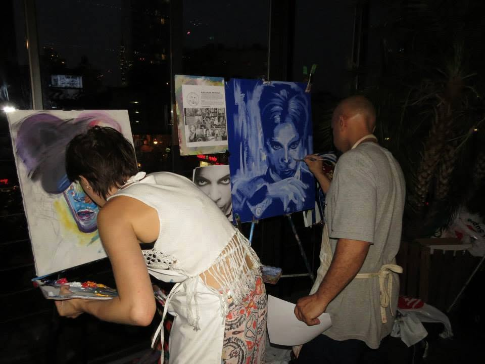

2014
Created Live
Prince was created in front of a live audience during The Collage Movement NYC at Dinner on Ludlow in New York City.
Painting in a room filled with people changed the experience of making the work. The process became part of the event itself rather than something that happened privately in the studio.